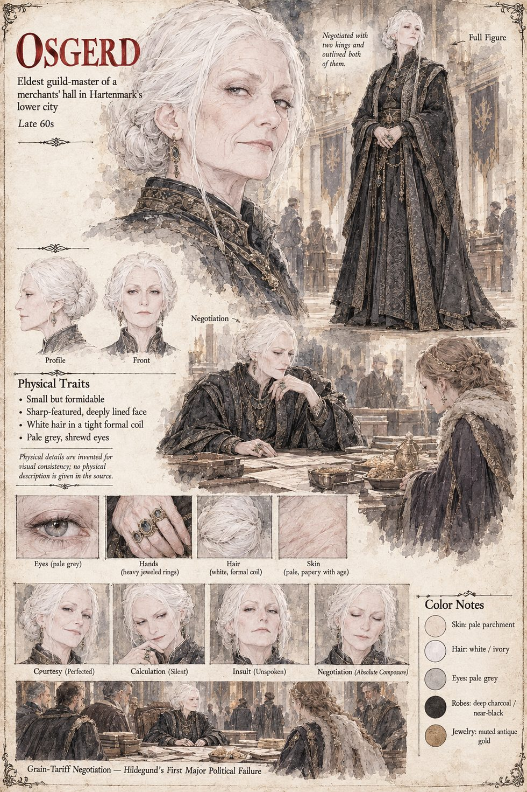

Osgerd
Eldest guild-master of a merchants' hall in Hartenmark · negotiated with two kings and outlived both of them · late sixties by her sheet
The eldest of four guild-masters across the table in a merchants' hall that smells of tallow and wet wool, who with her colleagues has buried enough failed treaties to paper a small chapel, and who has negotiated with two kings and outlived both. Hildegund walks in with what she still considers a perfectly reasonable position on grain tariffs and walks out three hours later having conceded every point that mattered, and one more, out of what she can only later diagnose as pure nervous generosity, that was not even under dispute. Osgerd thanks her afterwards with a courtesy so complete that it amounts to its own kind of insult, and Hildegund understands, walking back to her small room in the fading light, that she has been handled by a professional the way a professional handles an amateur: gently, thoroughly, and without ever once raising her voice. She does not cry, which she is privately rather proud of, and does not eat, which she is less proud of, until Frida finds her at the window past midnight.
The manuscript gives her a name, a career and a courtesy. The sheet's late sixties, white hair in a tight coil, pale-grey eyes, jewelled earrings and dark patterned merchant's robes are its own.